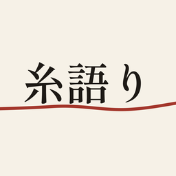

01
Kizamu 刻む
Habit and goal tracker
Daily, weekly, monthly and long-term goals, with timers, streaks and badges. Each check-off is one more notch.
Habit and goal tracker
Daily, weekly, monthly and long-term goals, with timers, streaks and badges. Each check-off is one more notch.

02Story bible for writers
Characters, places and world notes kept next to the chapters you're writing. Mention someone in a scene and their page lists every scene they're in.